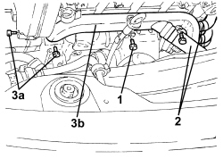
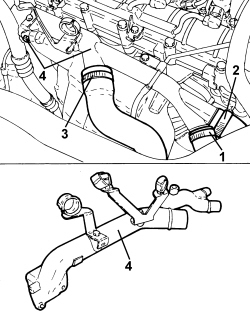
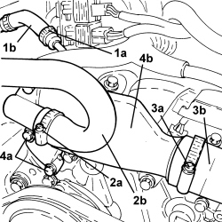
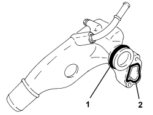

1088D24 WATER PUMP RIGID COOLANT INLET PIPE - R.R.
- Path
- Procedures > 10 ENGINE > 1088 ENGINE COOLING > 1088D COOLANT PIPES AND HOSES > 1088D24 WATER PUMP RIGID COOLANT INLET PIPE - R.R.
- Kind
- repair procedure (removal / refitting; the operation number is the code)
- Applies to
- engines: 1.9 JTS, 2.2 JTS, 3.2 JTS, 1.9 JTD 8V, 1.9 JTD 16V, 2.4 JTD 20V; all production periods
- Interactive page
- https://sloeber94.github.io/elrnDB/alfa/159/en/#/939010685
Applies to: engines: 1.9 JTS, 2.2 JTS; all production periods
 Removing
Removing
 Refitting
RefittingApplies to: engines: 1.9 JTS, 2.2 JTS; all production periods
Refitting
RemovingOp. 1088C30 THERMOSTAT UNIT - R+R
Applies to: engines: 1.9 JTD 8V, 1.9 JTD 16V; all production periods
Removing
Refitting
Applies to: engines: 2.4 JTD 20V; all production periods
Removing
RefittingOp. 1048A42 SLEEVE FROM FLOW METER TO TURBO CHARGER AIR INLET PIPE - R + R
Op. 0010T84 COOLANT FOR AIR CONDITIONING SYSTEM - DEHYDRATE AND REPRESSURIZE
Op. 7055B54 UNDER ENGINE PROTECTION/GUARD - R.R.
Op. 4450B04 RIGHT FRONT WHEEL - R.R
Op. 7055B91 RIGHT FRONT WHEEL ARCH LINER - R.R.
Op. 1092C26 BELT FROM AIR CONDITIONER COMPRESSOR DRIVING POWER STEERING PUMP - R + R
Op. 1092B68 BELT FROM A/C COMPRESSOR TO ALTERNATOR DRIVE - R + R
Op. 5040A20 AIR CONDITIONING COMPRESSOR - R+R - INCLUDES FLUID LEVEL CHECK AND TOP UP IF NECESSARY
Op. 5040A26 AIR CONDITIONING COMPRESSOR SUPPORT - R.R.
Op. 0010T20 ENGINE COOLANT - CHANGE
1. Loosen the band and disconnect the water return pipe from the heater.
2. Loosen the band and disconnect the water return pipe from the E.G.R. heat exchanger.
3. Loosen the band and disconnect the water return hose from the radiator.
4. Undo the fixing bolts and remove the water pump rigid inlet pipe complete with gasket.

Applies to: engines: 2.4 JTD 20V; all production periods
Refitting
Removing- Place the water pump rigid inlet pipe, complete with gasket, in position and tighten the bolts.
- Connect the water return hose from the radiator to the water pump rigid inlet pipe and secure it using the band.
- Connect the water return pipe from the heat exchanger for the E.G.R. to the water pump rigid inlet pipe and secure it using the band.
- Connect the water return pipe from the heater to the water pump rigid inlet pipe and secure it using the band.
Op. 5040A26 AIR CONDITIONING COMPRESSOR SUPPORT - R.R.
Op. 5040A20 AIR CONDITIONING COMPRESSOR - R+R - INCLUDES FLUID LEVEL CHECK AND TOP UP IF NECESSARY
Op. 1092B68 BELT FROM A/C COMPRESSOR TO ALTERNATOR DRIVE - R + R
Op. 1092C26 BELT FROM AIR CONDITIONER COMPRESSOR DRIVING POWER STEERING PUMP - R + R
Op. 7055B91 RIGHT FRONT WHEEL ARCH LINER - R.R.
Op. 4450B04 RIGHT FRONT WHEEL - R.R
Op. 1048A42 SLEEVE FROM FLOW METER TO TURBO CHARGER AIR INLET PIPE - R + R
Op. 0010T20 ENGINE COOLANT - CHANGE
Op. 0010T84 COOLANT FOR AIR CONDITIONING SYSTEM - DEHYDRATE AND REPRESSURIZE
Applies to: engines: 3.2 JTS; all production periods
Removing
RefittingOp. 7055B54 UNDER ENGINE PROTECTION/GUARD - R.R.
Op. 0010T20 ENGINE COOLANT - CHANGE
Op. 4450B04 RIGHT FRONT WHEEL - R.R
Op. 7055B91 RIGHT FRONT WHEEL ARCH LINER - R.R.
Op. 7055B66 ENGINE COMPARTMENT DUST COVER IN RIGHT FRONT WHEEL ARCH - R.R.
Op. 1008B10 POWER UNIT FRONT SUPPORT FLEXIBLE MOUNTING (TIMING SIDE) - REPLACE
Op. 1008A46 POWER UNIT RIGID SUPPORT - TIMING SIDE - R.R.
1. Loosen the band (1a) and disconnect the degassing pipe (1b) from the rigid pipe.
2. Loosen the band (2a) and disconnect the heater coolant return pipe (2b) from the rigid pipe.
3. Loosen the band (3a) and disconnect the radiator upper pipe (3b) from the rigid pipe.
4. Undo the bolts (4a) fixing the rigid pipe to the right cylinder head and remove the rigid pipe (4b) complete with O-rings.

Applies to: engines: 3.2 JTS; all production periods
1. Remove the O-ring for the coolant return duct on the left cylinder head.
2. Remove the O-ring for the coolant return duct on the right cylinder head.

Applies to: engines: 3.2 JTS; all production periods
Refitting
Removing- Fit new O-rings on the coolant return ducts on the left and right cylinder heads.
- Fit the rigid pipe in its housing and secure it using the bolts.
- Connect the radiator upper pipe to the rigid pipe and securing it using the band.
- Connect the heater coolant return pipe to the rigid pipe and securing it using the band.
- Connect the degassing pipe to the rigid pipe and securing it using the band.
Op. 1008A46 POWER UNIT RIGID SUPPORT - TIMING SIDE - R.R.
Op. 1008B10 POWER UNIT FRONT SUPPORT FLEXIBLE MOUNTING (TIMING SIDE) - REPLACE
Op. 7055B66 ENGINE COMPARTMENT DUST COVER IN RIGHT FRONT WHEEL ARCH - R.R.
Op. 7055B91 RIGHT FRONT WHEEL ARCH LINER - R.R.
Op. 4450B04 RIGHT FRONT WHEEL - R.R
Topics linked from this page (16)
- 0010T20 ENGINE COOLANT - CHANGE
- 0010T84 COOLANT FOR AIR CONDITIONING SYSTEM - DEHYDRATE AND REPRESSURIZE
- 1008A46 POWER UNIT RIGID SUPPORT - TIMING SIDE - R.R.
- 1008B10 POWER UNIT FRONT SUPPORT FLEXIBLE MOUNTING (TIMING SIDE) - REPLACE
- 1048A42 SLEEVE FROM FLOW METER TO TURBO CHARGER AIR INLET PIPE - R + R
- 1088C30 THERMOSTAT UNIT - R+R
- 1092B68 BELT FROM A/C COMPRESSOR TO ALTERNATOR DRIVE - R + R
- 1092C26 BELT FROM AIR CONDITIONER COMPRESSOR DRIVING POWER STEERING PUMP - R + R
- 4450B04 RIGHT FRONT WHEEL - R.R
- 5040A20 AIR CONDITIONING COMPRESSOR - R+R - INCLUDES FLUID LEVEL CHECK AND TOP UP IF NECESSARY
- 5040A26 AIR CONDITIONING COMPRESSOR SUPPORT - R.R.
- 5530B10 BATTERY - R+R
- 5530B52 BATTERY SUPPORT/DRIP TRAY - R.R
- 7055B54 UNDER ENGINE PROTECTION/GUARD - R.R.
- 7055B66 ENGINE COMPARTMENT DUST COVER IN RIGHT FRONT WHEEL ARCH - R.R.
- 7055B91 RIGHT FRONT WHEEL ARCH LINER - R.R.